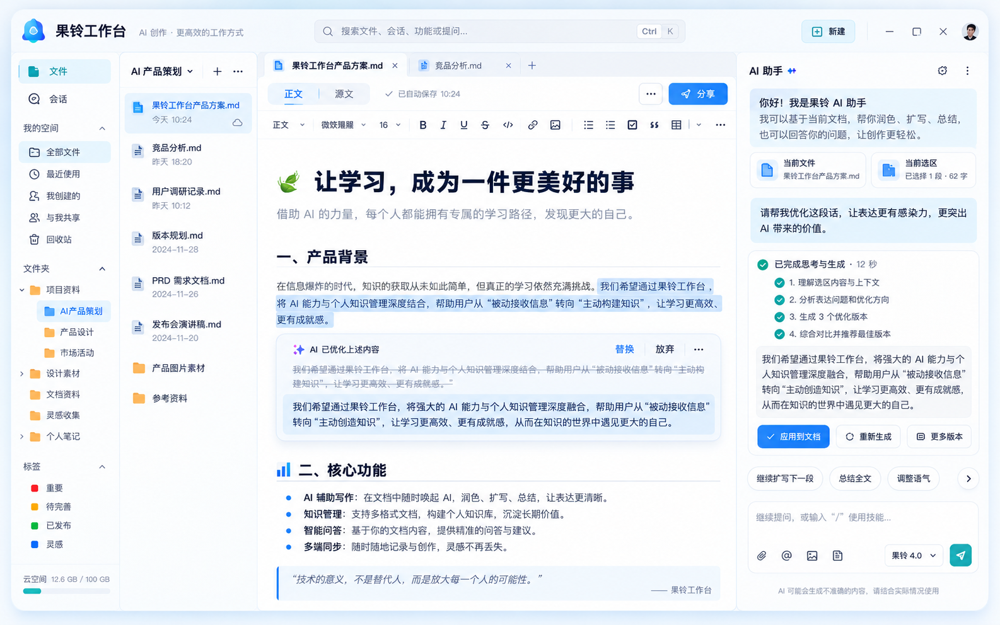
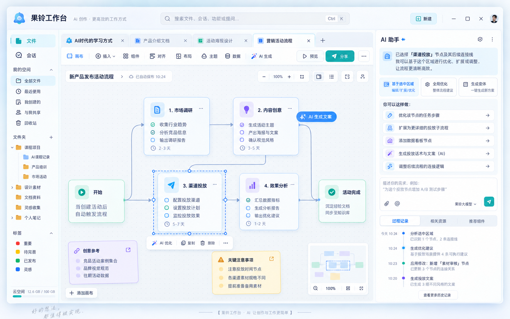

主工作台总览
这张主视觉图定义了整个产品的核心布局与气质。左侧是可用的真实文件管理，中间是多标签内容工作区，右侧是 AI 助手与过程面板。用户无需在“项目 / 课例 / 工作空间”等复杂概念中迷路，文件与会话就是最重要的两个一级对象。
- 文件与会话并列为一级入口
- 多标签、多表面统一承载在中央工作区
- 右侧 AI 面板提供上下文、过程与输入
- 整体保持轻量、专业、可持续扩展的桌面产品感
本方案以“AI 原生工作台”为核心，呈现果铃工作台的最终产品形态：文件与会话并列、活文档直接编辑、多表面统一共编、附件与任务一体化、AI 过程透明可见。
最终形态采用稳定的三栏结构：左侧负责文件与会话，中央负责内容与画布，右侧负责 AI 助手、执行过程与结果。普通用户可以从文件开始，也可以从会话开始。
这张主视觉图定义了整个产品的核心布局与气质。左侧是可用的真实文件管理，中间是多标签内容工作区，右侧是 AI 助手与过程面板。用户无需在“项目 / 课例 / 工作空间”等复杂概念中迷路，文件与会话就是最重要的两个一级对象。
下面六张图稿分别覆盖文档编辑、课件编辑、流程画布、首页工作台、AI 任务工作区以及整体主壳层，构成一套完整的最终形态设计语言。

“正文 / 源文”双模式明确区分可编辑内容与底层格式。AI 修改在正文内原位发生，不再通过外部候选文件再应用，强调即时、可撤销、低打断的写作体验。
缩略图、主画布与右侧 AI 助手协同工作。用户在当前页面和选区上直接发起修改，AI 过程透明可见，修改尽快作用于当前内容。

统一的画布式编辑体验，支持节点、区域和局部流程的 AI 优化、扩展和变体生成。用户可以看到推荐动作、相关资源与过程记录。
首页承担“入口、概览、启动工作”的职责，而不是上来就进入重型编辑器。文件和会话并列呈现，帮助用户快速进入工作状态。
这是任务型 AI 能力的集中呈现：选择模型模式、上传附件、看到任务规划、执行步骤、生成结果和执行记录。它不仅能对话，还能成为成果工作台与多模态中枢。
空间、文件与会话为一级对象。会话独立于文件，但能随时引用文件、页面、选区和附件。
AI 负责理解、设计和内容生成；产品负责上下文交付、直接工具、结果呈现与撤销恢复。
普通编辑优先走活文档直接修改路径，复杂工程构建、导入和可执行内容再使用更重的流程。